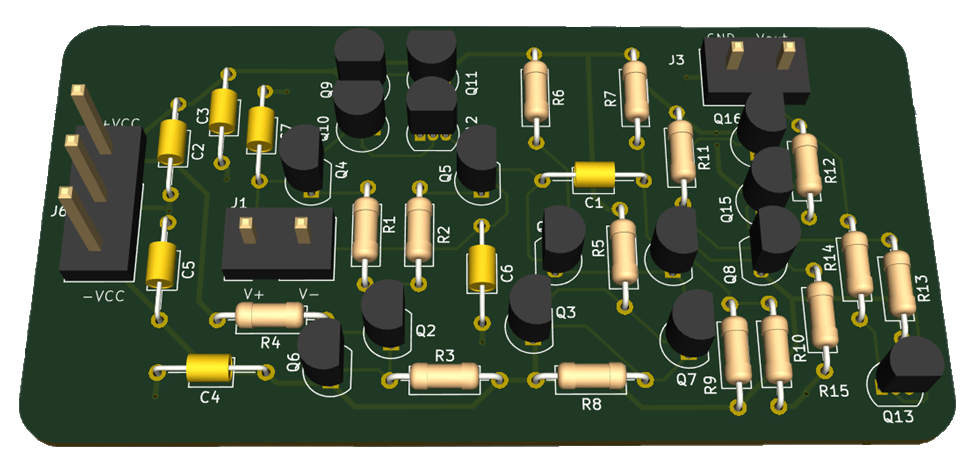
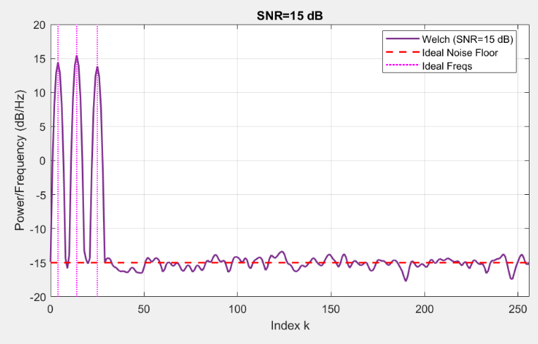
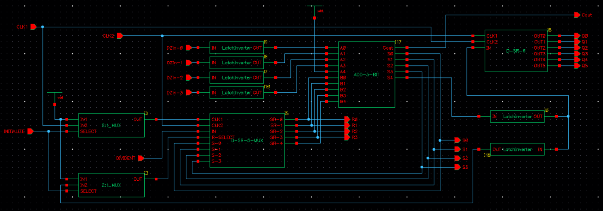
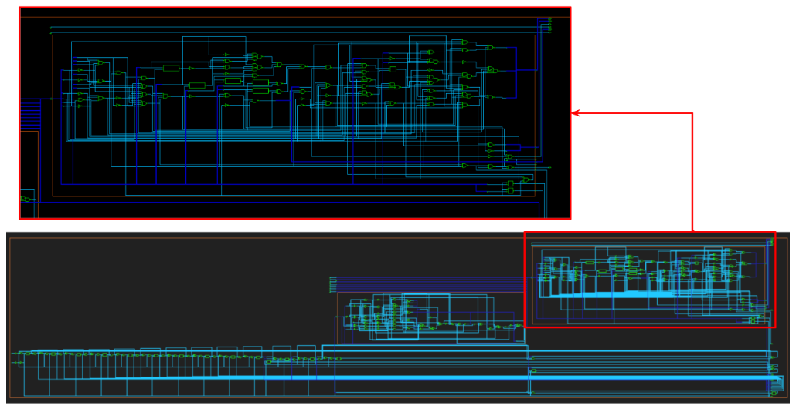

Selected Projects

Discrete Op Amp Design
Designed and simulated a general-purpose discrete operational amplifier to reinforce analog fundamentals. Currently awaiting 4-layer PCB fabrication.
View Project Details →

Digital Signal Processing
Implemented FIR/IIR filters, Fast Fourier Transforms, and calculated power spectral density from autocorrelation functions in MATLAB.
View Project Details →

VLSI Layout & Logic Design
Implemented a serial adder using shift registers and a binary division algorithm utilizing custom muxes and carry-ripple adders.
View Project Details →

RISC-V Control Unit
Synthesized an RTL implementation of a single-cycle control unit. Performed static timing analysis and generated full coverage reports.
View Project Details →